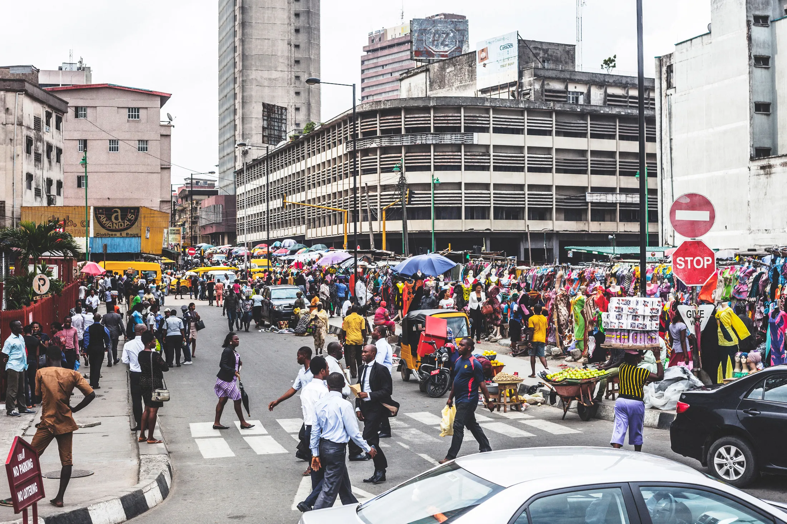
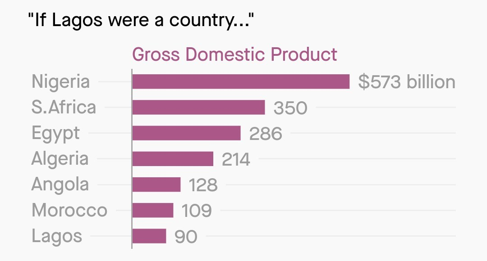

Lagos: Nigeria’s Economic Engine

Lagos is Nigeria’s economic centre, home to major banks, the country’s largest seaport, and many national and international companies.
Much of the city’s economy depends on the informal sector, where street vendors, market traders, and transport workers provide goods, services, and jobs for millions of people.
Lagos is also a hub of creativity and innovation. Its music, fashion, Nollywood film industry, and growing digital start-up scene have made the city a leading cultural and economic force in Africa.
Key Facts About Lagos’ Economy
- Lagos is home to more than 20 million people, making it one of the largest cities in Africa.
- The city handles around 70–80% of Nigeria’s maritime trade through its ports.
- Nigeria’s film industry, Nollywood, produces over 2,000 films each year, making it one of the world’s largest film industries.
- The informal sector provides employment for millions of Lagos residents, including traders, vendors, artisans, and transport operators.
- Lagos generates over 30% of Nigeria’s GDP, despite occupying less than 0.5% of the country’s land area.
